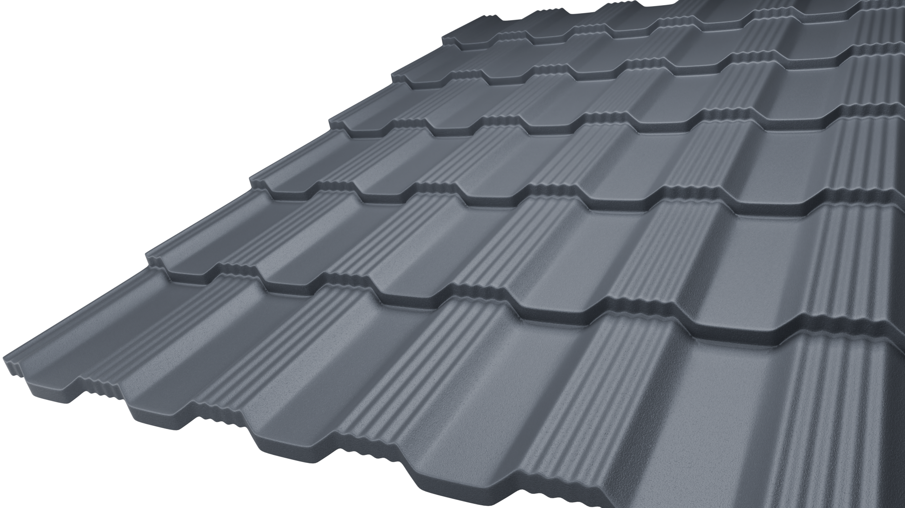

Cum se Montează un Acoperiș din Țiglă Metalică: Etapele Lucrării
📅 14 Noiembrie 2026 | ⏱️ 4 minute | 📍 Republica Moldova | ✍️ Valmex.md
Un acoperiș din țiglă metalică bine făcut nu înseamnă doar foile metalice de la suprafață. Structura de lemn, folia anticondens, ventilarea, sistemul pluvial și finisajele lucrează împreună, iar fiecare etapă contează pentru funcționarea întregului acoperiș.
Mai jos găsești prezentarea 3D interactivă pregătită de echipa Valmex.md, urmată de explicația fiecărei etape. Dacă vrei să afli cât ar costa lucrarea pentru casa ta, folosește calculatorul de acoperiș sau cere o ofertă.
Prezentare 3D: montarea acoperișului în 13 etape
Apasă START PREZENTARE ca să pornești. Pe telefon, prezentarea se vede mai bine pe tot ecranul: deschide prezentarea pe tot ecranul.
Etapele montării unui acoperiș din țiglă metalică
Prezentarea începe cu acoperișul finalizat: structura, hidroizolația, învelitoarea și sistemul pluvial lucrează împreună. Apoi urmărește, pas cu pas, cum se construiește. Iată etapele, explicate pe scurt.
1. Șarpanta
Șarpanta din lemn este scheletul acoperișului. Căpriorii preiau greutatea țiglei și a zăpezii, iar coama leagă cele două ape. Dimensiunile și distanțele se stabilesc prin proiect.
2. Folia anticondens
Se desfășoară peste căpriori, de la streașină spre coamă, cu suprapuneri. Ține umezeala și condensul departe de lemn și de izolație. Modul exact de suprapunere urmează instrucțiunile producătorului foliei.
3. Contrașipcile
Se fixează de-a lungul căpriorilor, peste folie. Între ele rămâne un canal de aer care ventilează acoperișul și elimină umezeala de sub țiglă.
4. Șipcile
Șipcile se montează transversal, peste contrașipci, și susțin foile metalice. Pasul dintre ele depinde de profilul ales și de recomandările producătorului.
5. Tinichigeria
Profilul de streașină și bordurile de început protejează marginile și îmbinările acoperișului, acolo unde apa ar putea pătrunde. Se completează cu dolii și racorduri, unde construcția le cere.
6. Sistemul pluvial
Se montează cârligele de susținere, apoi jgheaburile, cu o ușoară pantă către pâlnia de evacuare, ca apa să nu stagneze.
7. Țigla metalică
Foile metalice se ridică și se așază succesiv pe șipci, cu suprapunere laterală, apoi se fixează cu șuruburi autoforante cu garnitură EPDM. Poziția și numărul șuruburilor depind de profil și de instrucțiunile producătorului.
8. Finisajele
Coama închide acoperișul la vârf, iar bordurile de fronton protejează marginile laterale împotriva vântului și a ploii.
9. Burlanele
Pâlnia preia apa din jgheab, coturile o duc spre perete, iar burlanul o coboară la bază. Colierele țin burlanul fixat de fațadă.
10. Testul final cu ploaie
Ploaia lovește țigla, apa urmează panta spre streașină, intră în jgheab, ajunge la pâlnie și coboară prin burlan, fiind evacuată la baza casei. Un sistem complet funcțional.
Același acoperiș, în toate anotimpurile
Vara: razele soarelui încălzesc învelitoarea metalică. Aerul din canalul de ventilare evacuează căldura spre coamă, iar izolația reduce transferul ei spre interior.
Toamna: ploaia curge pe țiglă spre jgheab, iar frunzele se adună pe acoperiș. Jgheaburile se curăță periodic, ca apa să ajungă liber la burlan.
Iarna: izolația termică reține căldura în casă, iar zăpada se așază pe acoperiș, de aceea structura se calculează pentru sarcina de zăpadă. Grosimea izolației se stabilește prin proiect.
Primăvara: ploile și topirea zăpezii sunt preluate de sistemul pluvial, iar folia și ventilarea ajută lemnul să rămână uscat.
Eficiența termică: cu și fără izolație
Iarna: în stânga, fără izolație, căldura din casă iese prin acoperiș. În dreapta, izolația o oprește și o păstrează în interior.
Vara: în stânga, căldura soarelui pătrunde în casă. În dreapta, izolația o oprește, iar aerul din canalul de ventilare o duce spre coamă. Tipul și grosimea izolației se stabilesc prin proiect.
Cât costă montajul unui acoperiș din țiglă metalică
La Valmex.md, acoperișul la cheie începe de la 950 lei/m² și include țigla, lemnul, sistemul pluvial, accesoriile și manopera. Țigla metalică, doar ca material, costă 136 lei/m², fără accesorii, care se calculează individual. De aceea recomandăm oferta la cheie, unde totul este inclus.
Țigla este din oțel din Coreea, cu grosimea totală de 0,48 mm: 0,45 mm oțel și 0,03 mm strat de vopsea. Pentru lucrările eligibile poți plăti în rate cu 0% dobândă*. Condițiile exacte se confirmă în ofertă.
Întrebări frecvente
Ce include prețul „la cheie” pentru acoperiș?
Prețul de la 950 lei/m² include țigla, lemnul, sistemul pluvial, accesoriile și manopera. Suma finală se stabilește în ofertă, după evaluarea lucrării.
Cât durează montajul unui acoperiș?
În funcție de suprafață și complexitate, montajul durează între 3 și 10 zile lucrătoare. Primești un termen exact în ofertă.
Se poate monta peste acoperișul vechi?
În majoritatea cazurilor da, dar facem o evaluare gratuită pentru a te sfătui corect. Structura trebuie să fie solidă.
Pot plăti lucrarea în rate?
Valmex.md oferă finanțare în rate cu 0% dobândă pentru lucrările eligibile. Numărul de rate și condițiile exacte se confirmă în ofertă, înainte de acceptare.
Vrei un acoperiș montat corect, la cheie?
Echipa Valmex.md te ajută de la măsurare până la ultimul detaliu, în toată Republica Moldova. Vezi serviciul de montare acoperișuri sau cere direct o ofertă.
*Condițiile finanțării în rate se confirmă în oferta Valmex.md.
Articole similare

Cum să Alegi Țigla Metalică Potrivită
Ghid complet pentru alegerea țiglei metalice în funcție de buget, stil arhitectural și condiții climatice din Moldova.

Cât Durează un Acoperiș Metalic în Moldova?
Durata de viață a acoperișului metalic, factorii care o influențează și cum să o prelungești în condițiile din Republica Moldova.